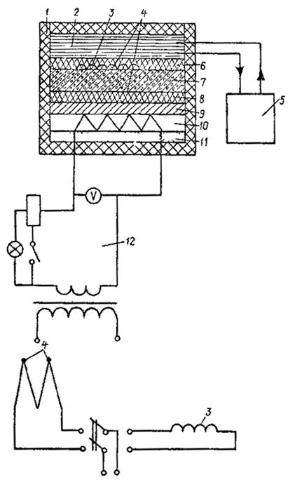
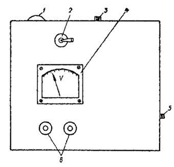
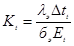
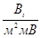
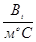
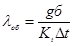
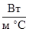
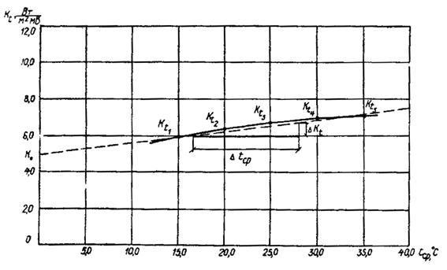
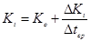

Ордена Ленина ГЛАВМОССТРОЙ ПРИ МОСГОРИСПОЛКОМЕ
ТЕХНИЧЕСКОЕ УПРАВЛЕНИЕ
ИНСТРУКЦИЯ
ПО ОПРЕДЕЛЕНИЮ КОЭФФИЦИЕНТА
ТЕПЛОПРОВОДНОСТИ
СТРОИТЕЛЬНЫХ МАТЕРИАЛОВ
В СТАЦИОНАРНОМ ТЕПЛОВОМ РЕЖИМЕ
ВСН 198-83
МОСКВА 1984
Настоящая инструкция разработана на основании результатов научно-исследовательских работ по созданию средств измерений для теплотехнического контроля качества изделий и конструкций в условиях их заводского изготовления и распространения на лабораторные испытания материалов конструкций, проводимых в научно-исследовательских и строительных организациях Мосгорисполкома.
Техническая реализация метода определения коэффициента теплопроводности строительных материалов основана на использовании измерительной системы, разработанной НИИМосстроем.
Инструкция разработана лабораторией метрологии технологических процессов НИИМосстроя (канд. техн. наук С. А. Калядин, инженер А. В. Левченко) и согласована с ВНИПИтеплопроектом, ВНИИжелезобетоном и ДЗК-3 Главмосстроя.
Инструкция предназначена для инженерно-технических работников заводских лабораторий, научно-исследовательских организаций Мосгорисполкома, выполняющих работы по производству и теплотехнической оценке конструкций зданий и сооружений, возводимых в Москве.
|
Ордена Ленина Главное управление по жилищному и гражданскому строительству в г. Москве Главмосстрой при Мосгорисполкоме Техническое управление |
Ведомственные строительные нормы |
ВСН 198-83 Главмосстрой |
|
Инструкция по определению коэффициента теплопроводности строительных материалов в стационарном тепловом режиме |
1.1. Инструкция по определению коэффициента теплопроводности строительных материалов содержит основные требования, предъявляемые к установке и эксплуатации измерительной системы с целью определения теплофизических свойств строительных материалов и теплозащитных качеств конструкций, состоящих из этих материалов, а также методику проведения измерений.
1.2. Измерительная система определяет величину теплового потока q, Вт/м, проходящего через образец материала, при установившемся температурном перепаде между его поверхностями.
1.3. Измерительная система предназначена для работы при температуре окружающего воздуха от +10 до +35 °С и относительной влажности до 80 %.
|
Внесены 12 декабря 1983 г. |
Утверждены Техническим управлением Главмосстроя 19 декабря 1983 г. |
Срок введения |
1.4. Установку и эксплуатацию измерительной системы для определения коэффициента теплопроводности материалов конструкций должны выполнять лаборанты, техники или механики по контрольно-измерительным приборам (КИП), имеющие опыт проведения теплотехнических испытаний материалов.
2.1. Измерительная система состоит из:
теплоизоляционной камеры;
регулируемого электронагревателя;
холодильника;
термостата по ТУ 16531539-75;
медь константановых термопар по ГОСТ 14894-69;
тепломера конструкции НИИМосстроя, ВСН 167-80;
полуавтоматического потенциометра типа ПП-63 по ГОСТ 9245-68;
самопишущего потенциометра типа КСП-4 по ГОСТ 7164-71.
Электрическая принципиальная схема приведена на рис. 1.

Рис. 1. Электрическая принципиальная схема измерительной системы:
1 - теплоизоляционная камера; 2 - холодильник; 3 - тепломер; 4 - термопара; 5 - термостат; 6-8 - резина; 7 - образец; 9 - дюралюминий; 10 - нагреватель; 11 - асбест; 12 - регулируемый электронагреватель
2.2. Одномерность потока, проходящего через испытываемый образец, обеспечивается теплоизоляционным кожухом камеры.
2.3. Температурный градиент по всей толщине образца достигается нагревом одной его поверхности нагревателем и отводом тепла с другой его поверхности холодильником.
2.4. Для более плотного прилегания испытываемого образца к демпфирующей плите нагревателя последняя оклеена термостойкой листовой резиной толщиной 2 мм.
2.5. Холодильник выполнен в виде емкости прямоугольного сечения размерами 250´250´30 мм с двумя штуцерами в ее боковой стороне.
2.6. Для более плотного прилегания холодильника к образцу на его рабочую поверхность нанесен слой герметика по ТУ 842-71 толщиной 5 мм со встроенными в него тепломеров в медь константановой термопарой.

Рис. 2. Общий вид панели управления теплоизоляционной камерой:
1 - сигнальная лампа; 2 - коммутационный тумблер; 3 - тумблер питания; 4 - вольтметр; 5 - ручка ползуна реостата; 6 - клеммы
2.7. На панели управления теплоизоляционной камерой (рис. 2) расположены:
сигнальная лампа, регистрирующая включение и выключение системы;
коммутационный тумблер, переключающий на выходные клеммы тепломер и дифференциальную термопару;
тумблер питания;
вольтметр, регистрирующий величину напряжения нагревателя;
ручка ползуна реостата, регулирующего напряжение нагревателя;
выводные клеммы для подключения прибора, регистрирующего ЭДС термопары и тепломера.
3.1. Для проведения испытания отбираются образцы в виде пластин размерами 250´250´50 мм ±10 %.
3.2. Образцу в количестве не менее трех должны пройти весь технологический цикл термообработки изделия.
3.3. Образцы должны иметь ровную поверхность без видимых дефектов ячеистой структуры и механической обработки.
3.4. При испытании образцов, подверженных уплотнению, деформации или усадке (например, минеральная вата и изделия на её основе, войлок, а также сыпучие материалы и т.п.), их следует закладывать в рамку из плотного теплоизоляционного материала (например, из жесткого пенополиуретана или ФРП-1), обеспечивающего заданные размеры.
3.5. Самопишущие мосты устанавливаются и подготавливается к работе с учетом требований, изложенных в «Инструкции по эксплуатации на мосты» 3.9026.171 ТО.
3.6. Поверка моста и выполнение измерений также осуществляются в соответствии с «Инструкцией по эксплуатации на мосты» 3.9026.171 ТО.
3.7. Поверка медь-константановых термопар должна осуществляться в соответствии с инструкцией № 163-54 Госстандарта СССР.
3.8. В течение первых двух лет с момента внедрения измерительной системы устанавливается интервал поверки в 6 месяцев.
По истечении двухлетнего периода эксплуатации производятся наработки на отказ и уточнение межповерочного интервала.
4.1. В соответствии с межповерочным интервалом необходимо определять коэффициент тепломера (измерительной системы), вмонтированного в слой тиоколового герметика на рабочей поверхности холодильника.
4.2. Определение коэффициента тепломера в измерительной системе должно проводиться посредством установки между нагревателем и холодильником образцового элемента из материала с известным коэффициентом теплопроводности.
4.3. Коэффициент тепломера в измерительной системе (для определенной средней температуры в образцовом элементе вычисляется по формуле:
 
где lэ - коэффициент теплопроводности
образцового элемента, 
Dtt - разность температур между нижней и верхней поверхностями образцового элемента, °С;
бэ - толщина образцового элемента;
Еt - показания тепломера при определенной температуре в образцовом элементе, мВ.
Примечание. При тарировке измерительной системы необходимо производить определение коэффициента тепломера Kt измерительной системы при разных средних температурах tcp в образцовом элементе (не менее пяти разных температур) и построить график зависимости Kt от tcp (рис. 3).
Средняя температура в образцовом элементе определяется по формуле:
tcp = tx + 0,5Dt, °С,
где tx - температура холодильника, °С.
Средние температуры в образцовом элементе следует определять в диапазоне от +15 до +35 °С.
5.1. До проведения измерений необходимо образцы высушить до постоянной массы, после чего определить плотность (объемную массу) каждого образца по ОСТ 20-2-74.
5.2. Массу образца определяют с погрешностью не более 0,002 г.
5.3. Испытываемый образец устанавливают в теплоизоляционную камеру измерительной системы и проводят определения в следующей последовательности:
регулятором напряжения нагревателя (ручкой ползуна реостата) и контактным термометром термостата устанавливают минимальный (8 + 10 °С) перепад температур относительно поверхностей испытываемого образца;
после установившегося режима (показания тепломера в мВ в течение часа изменяются не более чем на 1 %), приступают к измерениям.
В условиях установившегося теплового режима коэффициент теплопроводности материала образца изделия определяется по формуле:

lоб - коэффициент теплопроводности
образца в сухом состоянии, 
g - тепловой поток, проходящий через образец (показания потенциометра, мВ);
б - толщина образца, м;
Kt - коэффициент тепломера (измерительной системы), определяемый по графику (см. рис. 3);
Dt - разность температур между поверхностями образца (показания термопары)

Рис. 3. Зависимость коэффициента тепломера
измерительной
системы (Kt) от средней температуры tcp.
Примечание. Зависимость Kt от средней температуры tcp, может быть выражена уравнением:

7.1. Измерительную систему следует хранить с закрытой крышкой, слив воду из холодильника и термостата, в помещении, при температуре от +10 до +35 С° и относительной влажности воздуха не более 80 %.
7.2. В окружающей среде не должно быть вредных примесей, вызывающих коррозию.
7.3. Транспортировка измерительной системы должна производиться в упаковке, исключающей механическое повреждение.
7.4. При работе с измерительной системой должны выполняться общие правила работы с электрическими установками.
7.5. При работе с измерительной системой со снятой панелью управлений (при ремонте) следует соблюдать особую осторожность, так как отдельные точки схемы имеют относительно корпуса напряжение, опасное для жизни.
К таким точкам относятся:
выводы реостата, где значение напряжения достигает 220 В;
места присоединения к тумблеру питания;
места присоединения к выводам индикаторной лампы.
7.6. В процессе регламентных работ воспрещается:
производить смену деталей под напряжением;
определять наличие напряжения в схеме на «ощупь» или на «искру»;
оставлять без надзора измерительную систему под напряжением при кратковременном отсутствии лиц, производящих работу.
7.7. Лица, допущенные к работе, должны проходить ежегодно проверку знаний по технике безопасности.
СОДЕРЖАНИЕ
|
2. Характеристика измерительной системы.. 2 4. Тарировка измерительной системы.. 4 7. Условия хранения и транспортировки измерительной системы и требования техники безопасности. 5 |